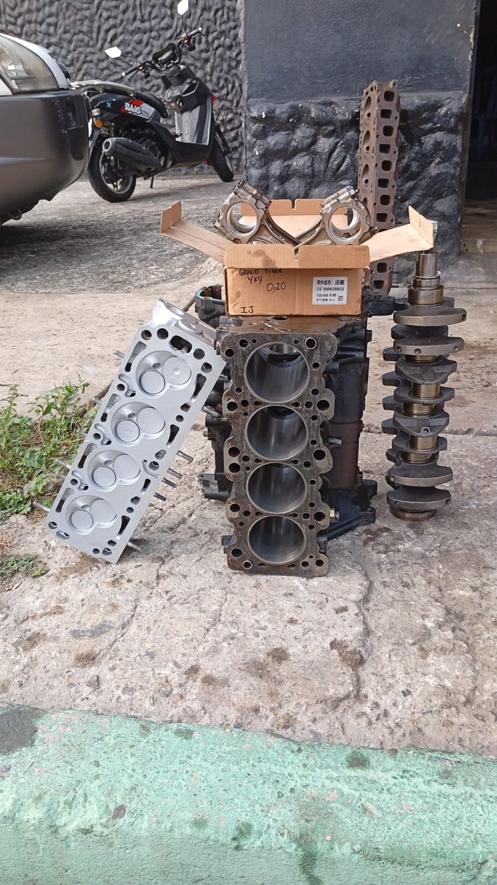
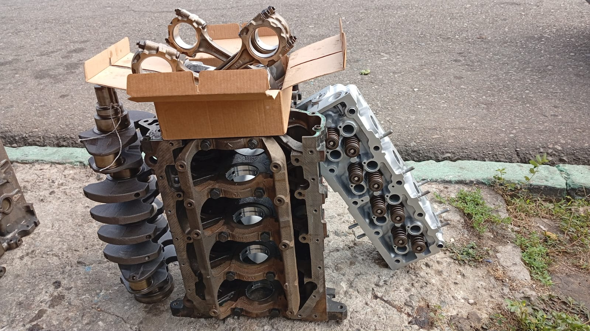

Cámaras (culatas) de motor reparadas, rectificadas y probadas en Regasa para clientes de todos los municipios del estado Barinas.
Mira el estado real en que recibimos las cámaras (culatas) y cómo las entregamos después de repararlas.
Cámaras (culatas) diésel y gasolina recibidas para diagnóstico y reparación, de clientes de distintos municipios de Barinas.






Cuéntanos qué síntomas tiene tu vehículo y te respondemos por WhatsApp con la orientación y el presupuesto para reparar la cámara o culata.